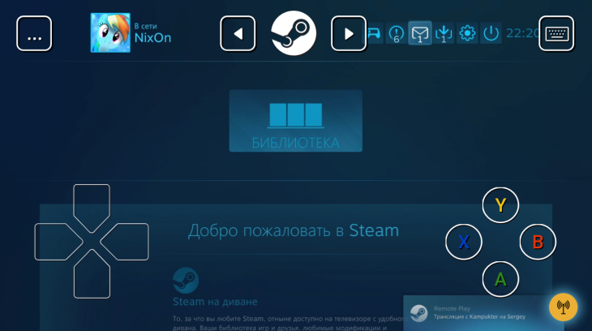
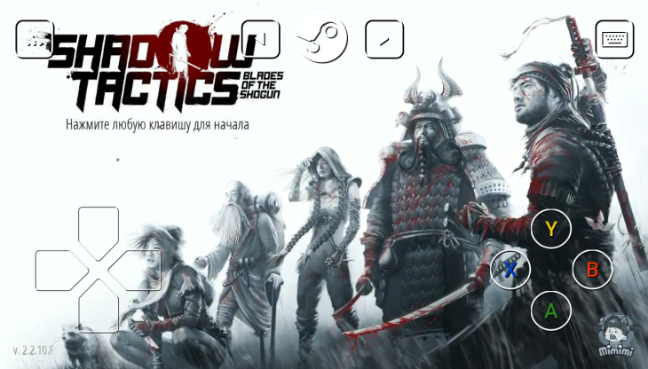

Canva — возможно, самый лучший сервис по созданию обложек, иллюстраций и постеров

10
2
|
24 июня 2019
|
Олег Цегельник
Shop Titans: Дизайн и Сделка — обзор
и Гайд для начинающих
Компания Valve (да-да, та самая, которая недавно выпустила DOTA Underlords) относительно недавно представила сервис Steam Link, о котором активно писали околоигровые порталы.
Оценка https://apps4.life
Преимущества:
Сюжетная линия
Невероятная музыка
Непредсказуемая концовка
Недостатки:
Мало уровней
Графика на любителя
Быстро приедается
Все довольно просто — сначала нужно скачатьприложение с App Store. После этого подключиться к Wi-Fi сети (хорошая картинка будет при 5 GHz Wi-Fi, с частотой 2.4 GHz), спарить устройства друг с другом и подождать, пока установятся все необходимые драйверы. После этого на экране компьютера произойдет смена интерфейса приложения Steam, и оба устройства будут показывать одну и ту же картинку (прямо как в TeamViewer). Навигация по экрану смартфона может осуществляться как при помощи кнопок управления, так и с помощью тапов, имитирующих перетаскивание мыши. Все это настраивается в соответствующем меню в левой части экрана.
После спаривания устройств вы можетезапускать любые игры, которые есть в Steam. Они будут проигрываться на компьютере (ах да, он должен быть включен) и транслироваться на ваш смартфон. Но нужно понимать, что в этом случае не все игры будут подходить для этого. Вот, например, я пробовал играть в Shadow Tactics — это аналог культовой Commandos. Так вот, играть невозможно — слишком маленький и неудобный интерфейс, тяжело управлять юнитами, нужно пристреливаться к управлению. Как вы понимаете, все соревновательные игры тоже можно вычеркнуть из списка потенциальных «во что бы поиграть» продуктов.
Но вот поиграть нормально так и не получилось
Поэтому если вдруг вам хочется поиграть на смартфоне во что-то компьютерное, то рекомендуем обратить внимание на спортивные игры, гонки или какой-нибудь несложный экшен.
все, что связано с соревновательной составляющей, особенно если от скорости отклика и реакции зависит ваша победа, лучше отложить в сторону
Адвенчуры и бродилки тоже хорошо заходят,ну то есть те игры, которые было бы удобно запускать на консолях. Вот, к примеру, в GTA V очень удобно — там и хорошая графика, и нормальное управление. Но все, что связано с соревновательной составляющей, особенно если от скорости отклика и реакции зависит ваша победа, лучше отложить в сторону, и даже DOTA2 с какими-нибудь самыми простыми ботами заходит ну так себе.
Мы потестировали приложение несколько дней, и можем с уверенностью сказать — кейсов для использования Steam Link не очень много. Поэтому: — если вы хотите поиграть во что-то, что есть на компьютере, но нет на смартфоне, — если вы проходите какую-то несложную игру, и вам принципиально / просто интересно не бросать в нее играть, — если вы не ищете легких путей, То Steam Link — для вас. Ну и если просто интересно — а вообще практического применения мы так и не обнаружили.
Любопытный факт — это как раз то самое приложение,которое компания Apple не пропускала целый год, ссылаясь на несоответствие требованиям App Store.
Хотя на самом деле проблема была в другом — Steam Linkпо описанию можно было расценить как конкурента их сервису Arcade, и наличие конкурента в собственном магазине существенно усложнило бы проблему. В конечном счете модераторы Apple убедились, что программа их будущему не угрожает, и пропустили ее в глобальный релиз.
Похожие материалы:
Canva — возможно, самый лучший сервис по созданию обложек, иллюстраций и постеров
10
2
|
24 июня 2019
|
Олег Цегельник
Canva — возможно, самый лучший сервис по созданию обложек, иллюстраций и постеров
10
2
|
24 июня 2019
|
Олег Цегельник
Canva — возможно, самый лучший сервис по созданию обложек, иллюстраций и постеров
10
2
|
24 июня 2019
|
Олег Цегельник